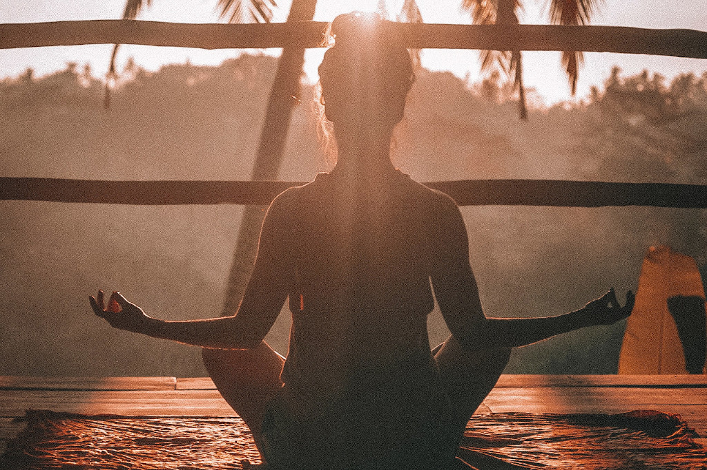

December 2019
Yoga is goed voor je lijf, met mindfulness leer je meer aandachtig te zijn en beter te concentreren, in meditatie observeer je gedachten. Stuk voor stuk mooie oefeningen met fijne resultaten.
Laten we in het kader van zelfstudie en een bewust leven eens de relatie tussen yoga, mindfulness, concentratie en meditatie beter bekijken en als één geheel beschouwen. Met deze krachten gebundeld verbeter je de kwaliteit van je leven. Hier lees je hoe dat werkt.
Yoga wordt vaak gezien als het doen van houdingen, asana's. Je lichaam in een bepaalde houding zetten is een fysieke bezigheid. Daarbij wordt je uitgedaagd houdingen te doen die je soms goed liggen, maar soms ook niet. Je rekt en strekt en spant je in om in een bepaalde pose te komen. Daarna blijf je even stil in de pose, om te zien wat het met je doet. In een yoga les doe je een stuk of tien houdingen, soms meer en soms minder. Aan het eind van de les is je lichaam opgewarmd en ontspannen. Je hebt heerlijk even alleen je aandacht bij je lichaam gehad, zonder dat je al teveel afgeleidt was door de gedachten van de dag. Dat geeft rust, tijdelijke rust.
Wat is er nu eigenlijk gebeurd in die yoga poses? Als je goed oplet in de houding, dan merk je dat door het stilstaan in een houding het feest gaat beginnen. Als je lichaam stil wordt, krijgt energie de kans zich vrij door het lichaam te bewegen. De energie hoeft even niet je lichaam aan te sturen, in tegendeel, de energie gaat je lichaam helen! Net als tijdens je slaap. In je slaap is je lichaam stil, gaat de energie stromen en wordt je lichaam schoongemaakt, zodat je in de morgen weer fris wakker kan worden. Dat gebeurt ook in een yogahouding. De energie gaat vrij stromen en schoont blokkades in je lichaam op. Daarom is iedere houding anders, met iedere houding activeer je een ander gebied van je lichaam, waar de energie zijn werk gaat doen. Daarom kun je ervaren dat sommige houdingen makkelijker gaan dan anderen. Dat is bij iedereen verschillend.
De essentie van yoga zit in het stilstaan in de houding zodat je energie zijn werk kan doen. Dat is in ieder geval zo in de Hatha Yoga en Raja Yoga. Er zijn ook yoga vormen waarin meer aandacht naar de 'flow' van de houdingen gaat, daar volgt het lichaam de beweging van de energie. Dat kan ook, dan wordt de energie gebruikt om in de houding te komen en de houding te verbeteren.
Als je in een yogahouding stil staat en de energie gaat stromen, dan kun je met aandacht en concentratie beginnen. Om te beginnen heb je je aandacht bij je eigen houding en ben je bewust dat je in deze houding bent gaan staan. Niet meer, maar ook niet minder. Dat is aandachtig zijn, of mindfulness. Maar dan, je geest gaat ongetwijfeld nieuwe gedachten opwerpen. Misschien vind je jezelf niet goed staan, misschien schiet er een probleem van je werk door je hoofd of je bedenkt je ineens dat je iets vergeten bent. Er zijn honderd en één dingen die je kunnen afleiden. De kunst is om dat niet te laten gebeuren, want je wilt stil zijn om de energie zijn werk te laten doen. Dan helpt concentratie, dan breng je je aandacht naar één punt. Blijf met je aandacht bij je houding.
Wat gebeurd er nu tijdens de concentratie? Door te blijven focussen op één punt krijg je profijt van twee dingen:
Meestal sta of zit je maar een paar minuten in een yoga pose. Je hebt even de tijd nodig om in de pose te komen, vervolgens tijd nodig om de energie te laten stromen en je aandacht ergens naar toe te brengen en dan nog even tijd voor concentratie. Na een paar minuten stap je dan weer uit de houding en zit het werk er op. Op naar de nieuwe houding en hetzelfde proces.
Je kunt ook blijven zitten! Dan wordt de yogahouding een meditatiehouding. Dat is het makkelijkst in een houding die je fysiek wat langer kunt volhouden. Dat is de reden waarom meditatie over het algemeen zittend wordt beoefend. Maar laat niets je weerhouden om een andere yogahouding aan te nemen. Kies alleen niet voor een liggende houding, want dan is het gevaar dat je in slaap valt. Om in yoga bewust te blijven is een iets actievere houding aan te raden.
Na je concentratie kun je in meditatie komen. Meditatie is een toestand, je kunt het niet doen, je kunt niet 'mediteren'. Je kunt wel in een meditatieve toestand komen door je te concentreren. Blijf je concentratie verdiepen. Je was gefocussed op één punt. Blijf daarbij, laat je niet afleiden en maak het gebied van je concentratie steeds kleiner. Was je aandacht in eerste instantie bij je hoofd. Breng dan je aandacht naar je neus. Kun je daar een tijdje blijven, ga dan met je aandacht naar je neusgaten. Misschien begin je jeuk boven je bovenlip te ervaren of de koude van de inademing of de warmte van de uitademing of iets anders. Maak je concentratie gebied steeds kleiner!
Wanneer kom je dan in meditatie? Door je concentratie gebied te verkleinen, wordt je geest steeds stiller en gaat er meer energie stromen, het effect van concentratie. Dit gebeurd totdat je volledig opgaat in je concentratie object. Voor je geest bestaat er niets anders dan jij en je concentratieobject. Dan zijn er geen andere gedachten meer mogelijk en stopt het denkproces en word je stil van binnen, letterlijk en figuurlijk. Dat is meditatie, een toestand waarin je het concentratie object in zijn essentie ervaart.
Dit is echte rust, niet de tijdelijke rust van de yogahouding, maar permanente rust door het stopzetten van het denken. De energie kan dan jouw wezen gaan opschonen bij zijn oorsprong. De wortels van de gedachten worden dan schoongemaakt, waardoor deze permanent niet meer terugkomen.
Door iedere yogahouding, concentratie en meditatie sessie heel je jezelf, je voelt je zo veel beter, en dat vergroot de kwaliteit van je leven op alle fronten.
Als je door hebt dat Yoga zo werkt: